Apprendre, chaque semaine
Intelligence artificielle, marketing digital, Pack Office : des méthodes concrètes, des nouveautés décryptées et quelques idées reçues démontées.

Excel : la mise en forme conditionnelle, le hack pour lire tes données d’un coup d’œil
La mise en forme conditionnelle Excel : colore tes cellules (surbrillance, barres, icônes, doublons) pour lire tes données d'un coup d'œil.
Lire l’article
Marketing : les KPIs qui comptent vraiment (arrête de deviner, mesure ce qui rapporte)
Mesurer son marketing avec les bons KPIs : un indicateur par objectif, le coût d'acquisition vs valeur client, et les vanity metrics à ignorer.

L’IA peut maintenant faire tes achats : le ChatGPT Wallet ouvre une nouvelle ère (ce que ça change)
L'IA peut maintenant faire des achats pour toi (ChatGPT Wallet). Ce que ce tournant change et la compétence qui devient vitale : garder le contrôle.

« Les certifications, ça ne sert à rien » : la demi-vérité qui te coûte cher (la preuve)
« Les certifications ne servent à rien » ? Faux. Leur vrai rôle : un signal de confiance. Compétence ET preuve, pas l'un OU l'autre.

La preuve sociale : le levier qui fait vendre sans forcer (avis, chiffres, cas clients)
La preuve sociale : le levier qui fait vendre sans forcer. Avis, chiffres, notoriété, études de cas — comment les récolter et où les afficher.

L’IA se spécialise métier par métier : la fin du générique (et ton opportunité)
L'IA se spécialise métier par métier (finance, associatif…) : la fin de l'outil générique. Ton opportunité + 3 pas pour l'appliquer à ton métier.

Les 5 formules Excel essentielles qui changent tout (avec un exemple concret chacune)
Les 5 formules Excel essentielles (SI, RECHERCHEX, SOMME.SI.ENS, SIERREUR, NB.SI) avec un exemple concret chacune. Automatise 80 % de ton quotidien.

« Le CPF, c’est de l’arnaque » : la grande intox (et ce que la réforme 2026 change vraiment)
« Le CPF, c'est de l'arnaque » ? Faux. Les biais qui nourrissent l'intox, ce qu'est vraiment le CPF, et ce que la réforme 2026 (150 €, tri) change.

Word : styles + sommaire automatique, le hack pour des documents pros deux fois plus vite
Styles Word + sommaire automatique : la méthode pour des documents pros deux fois plus vite. Titres, table des matières et mise à jour en 1 clic.

Le tunnel de vente qui amène des clients (attirer, capturer, convertir, fidéliser)
Le tunnel de vente étape par étape : attirer, capturer, convertir, fidéliser. Transforme ton audience en clients de façon prévisible.
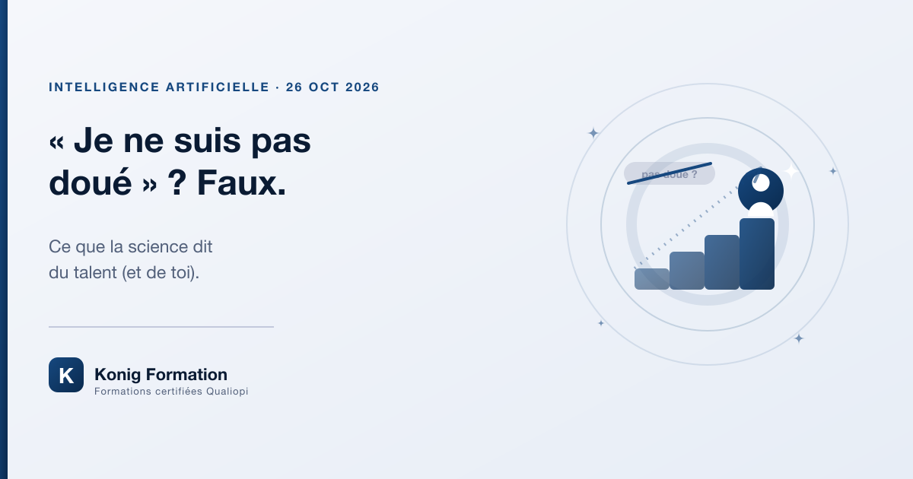
« Je ne suis pas doué pour ça » : la croyance qui te bloque (et ce que dit la science)
« Je ne suis pas doué » ? La science dit l'inverse : pratique délibérée et état d'esprit battent le « don ». Pourquoi tu peux vraiment apprendre.
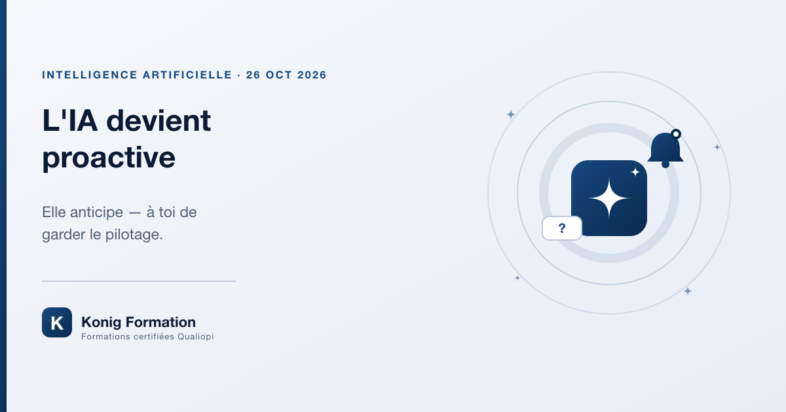
L’IA devient proactive : elle n’attend plus que tu lui demandes (ce que ça change)
L'IA devient proactive : elle anticipe et agit avant que tu demandes (Claude Duet…). Ce que ça change et les 3 compétences pour la piloter.
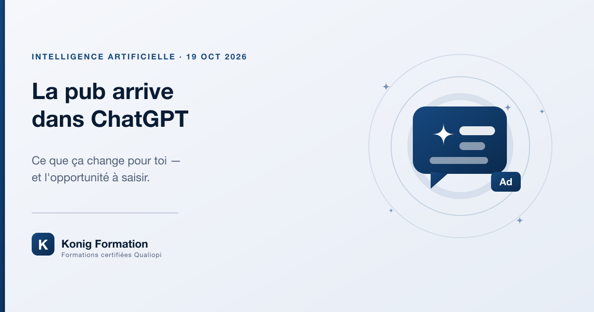
La pub arrive dans ChatGPT : ce que ça change pour toi (et l’opportunité à saisir)
La publicité arrive dans ChatGPT (rapporté mi-octobre 2026) : ce que ça change pour toi, les réflexes à adopter et l'opportunité marketing à saisir.
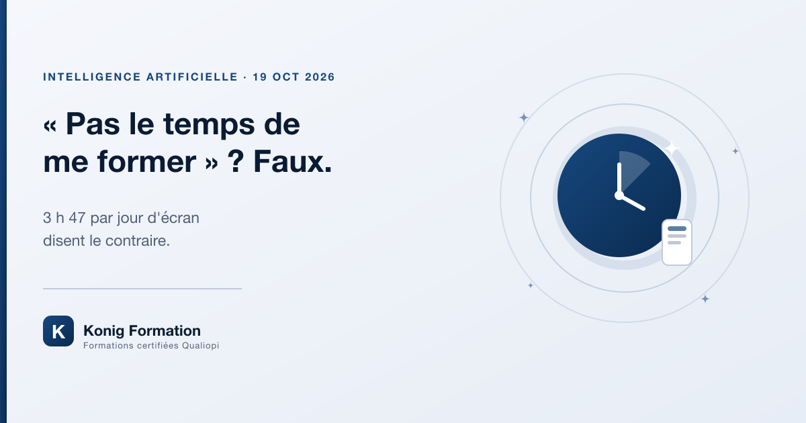
« Je n’ai pas le temps de me former » : le mensonge que tu te racontes (3h47 par jour le prouvent)
« Je n'ai pas le temps de me former » ? 3h47/jour d'écran prouvent le contraire. Ce n'est pas l'horloge, c'est la priorité — et ça se change.

Outlook : reprends le contrôle de ta boîte mail (règles, actions rapides, modèles)
Boîte mail Outlook qui déborde ? Reprends le contrôle : règle des 2 minutes, 3 dossiers, règles de tri, actions rapides, modèles et calendrier.

Copywriting : la méthode pour écrire des textes qui vendent (même si tu n’es pas écrivain)
Écrire pour vendre, ça s'apprend : bénéfices vs caractéristiques, structure AIDA, titres qui accrochent, un seul appel à l'action. La méthode copywriting.

Le publipostage : envoie 200 lettres ou mails personnalisés en 10 minutes (Word + Excel)
Le publipostage : envoie 200 lettres ou mails personnalisés en 10 minutes avec Word et Excel. La recette en 5 étapes + les pièges à éviter.
GPT-6 est désormais gratuit pour tous : ce que ça change (et la compétence qui fait la différence)
GPT-6 est désormais gratuit pour tous sur ChatGPT. Si tout le monde a le même outil, la différence se fait sur l'usage : 3 réflexes pour te démarquer.

Google Ads pour débutants : lance ta première campagne rentable sans cramer ton budget
Google Ads pour débutants : lance ta première campagne rentable sans gaspiller. Objectif, mots-clés, ciblage, enchères et suivi des conversions.
« Excel, c’est dépassé, l’IA fait tout » : la plus grosse erreur que tu puisses faire en 2026
« Excel, c'est dépassé » ? Faux : ~1,5 milliard d'utilisateurs, et l'IA a besoin de données Excel propres. Pourquoi Excel + IA est LA compétence 2026.
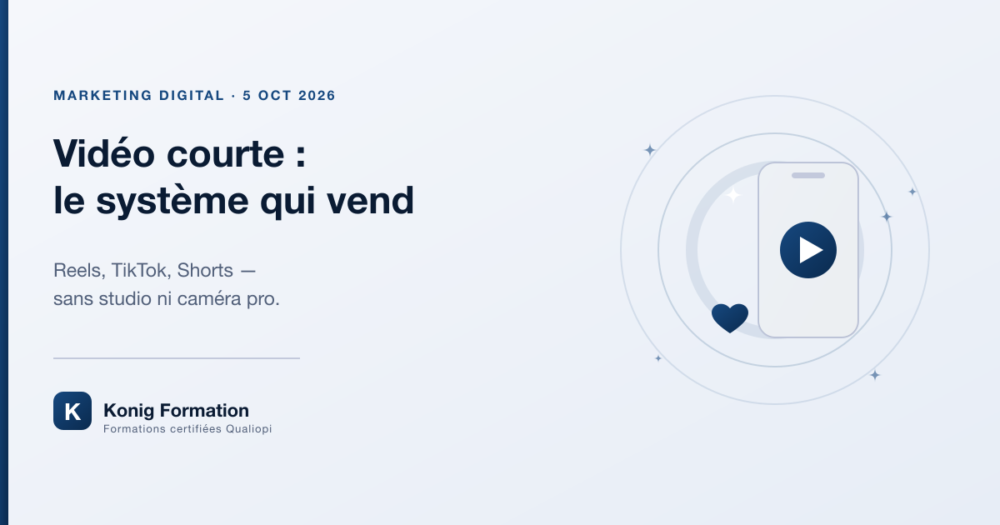
Vidéo courte : le système pour générer des clients avec Reels, TikTok et Shorts (sans studio)
Vidéo courte : le système pour générer des clients avec Reels, TikTok et Shorts, sans studio. 4 étapes : piliers, accroche, format, recyclage.

« Les tutos YouTube suffisent pour se former » : la science dit le contraire (et voici pourquoi tu stagnes)
« Les tutos YouTube suffisent » ? La science dit non : illusion de maîtrise, 80 % d'abandon, zéro feedback. Pourquoi tu stagnes — et quoi faire.

Le tableau croisé dynamique : le hack Excel qui transforme 2 heures de calculs en 2 minutes
Le tableau croisé dynamique : le hack Excel qui transforme 2 h de calculs en 2 minutes. La recette en 5 étapes + les erreurs de débutant à éviter.

L’IA n’a jamais été aussi puissante — et c’est exactement pourquoi tes compétences valent de l’or
L'IA n'a jamais été aussi puissante et bon marché — et c'est pourquoi tes compétences en IA valent de l'or. DevDay 2026 + 3 réflexes à adopter.

L’email marketing n’est pas mort : le système pour transformer une liste en revenus
L'email marketing n'est pas mort : le système en 4 étapes pour transformer une liste en revenus (aimant, séquence de bienvenue, rythme, segmentation).
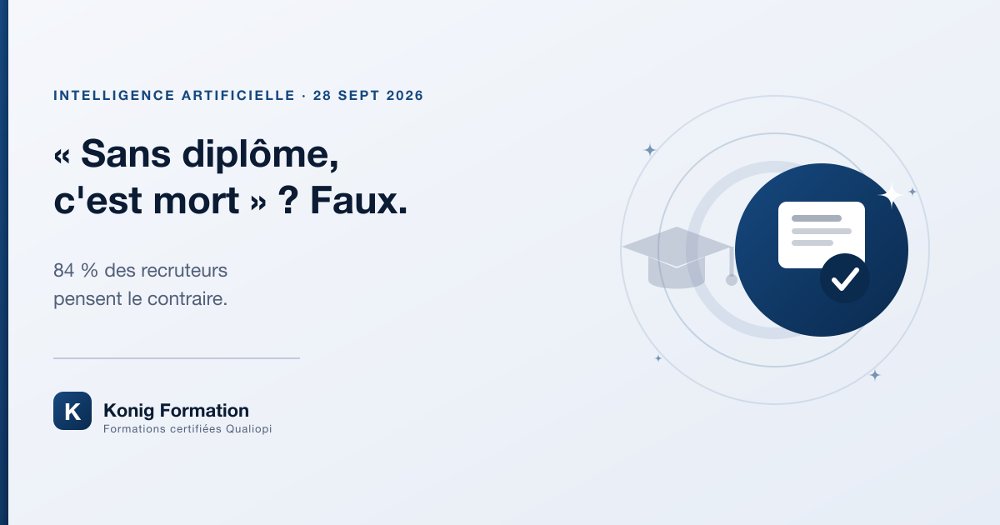
« Sans le bon diplôme, c’est mort » : 84 % des recruteurs pensent le contraire (la preuve)
« Sans le bon diplôme, c'est mort » ? Faux : 84 % des recruteurs embauchent sur les compétences. La preuve — et comment le prouver sans diplôme.
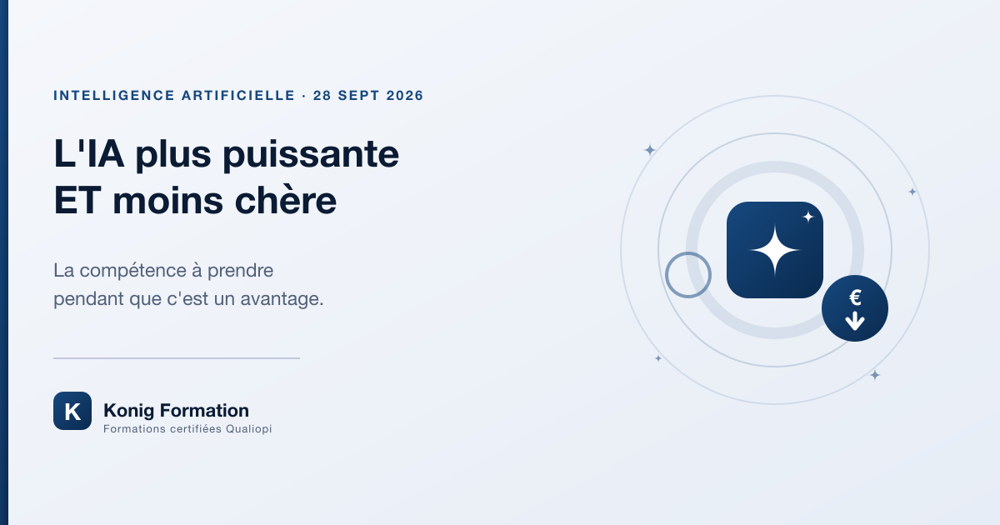
Claude Opus 5.5, GPT-6 Sol… l’IA devient plus puissante ET moins chère : la compétence à prendre
Claude Opus 5.5, GPT-6 Sol : l'IA devient plus puissante ET moins chère. La compétence à prendre + 3 réflexes pour bien utiliser l'IA au travail.

Copilot débarque dans PowerPoint : crée des présentations qui claquent en 3 fois moins de temps
Copilot dans PowerPoint : compétences personnalisées, slides interactives, citations sourcées. La méthode en 3 étapes pour des présentations express.
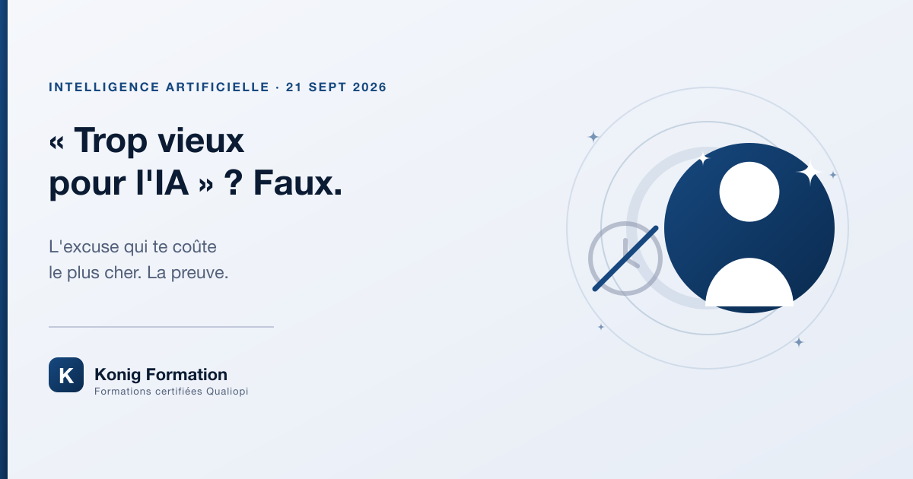
« Je suis trop vieux pour l’IA » : l’excuse qui te coûte le plus cher (la preuve)
« Je suis trop vieux pour l'IA » : la croyance qui coûte le plus cher. Pourquoi apprendre l'IA à tout âge est possible — et où tu as le plus à gagner.
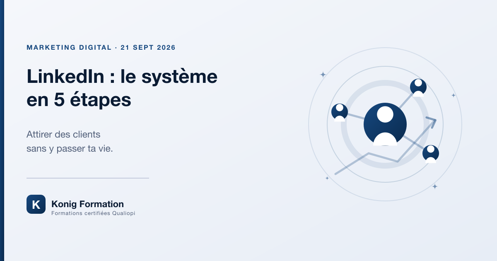
LinkedIn : le système en 5 étapes pour transformer ton profil en machine à opportunités
Le système LinkedIn en 5 étapes pour te faire connaître et attirer des clients sans y passer ta vie : profil, contenu, cadence, engagement.

L’IA construit déjà la prochaine IA : la compétence qui va vraiment compter (et 3 automatisations à tester)
L'IA aide déjà à construire l'IA et à exécuter tes tâches métier. La compétence à prendre + 3 automatisations sans code à tester dès aujourd'hui.

Copilot débarque dans Word : 3 nouveautés de septembre qui te font gagner des heures
Copilot dans Word : hyperliens auto, compréhension des images, revue mot à mot des modifs. 3 usages concrets pour gagner des heures dès aujourd'hui.

SEO + IA : le parcours en 90 jours pour devenir opérationnel en marketing digital
SEO + IA : un parcours en 90 jours pour devenir opérationnel en marketing digital, même en partant de zéro. 3 étapes concrètes et les pièges à éviter.

GPT-6 « Astra » vient de sortir : la compétence IA à ne pas rater cette rentrée
GPT-6 Astra est sorti : la compétence IA à viser cette rentrée + 3 réflexes concrets à appliquer dès aujourd'hui pour ne pas être dépassé.
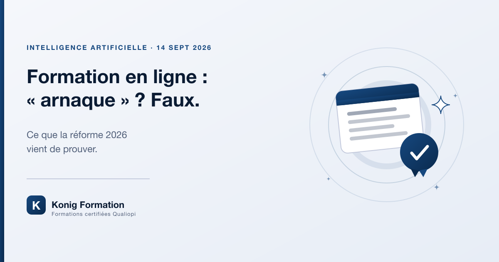
« Les formations en ligne, c’est de l’arnaque » : ce que la réforme 2026 vient de prouver
« Les formations en ligne, c'est de l'arnaque » ? La réforme 2026 (tri France Travail, Qualiopi) prouve le contraire — et ce que le gratuit ne donne pas.
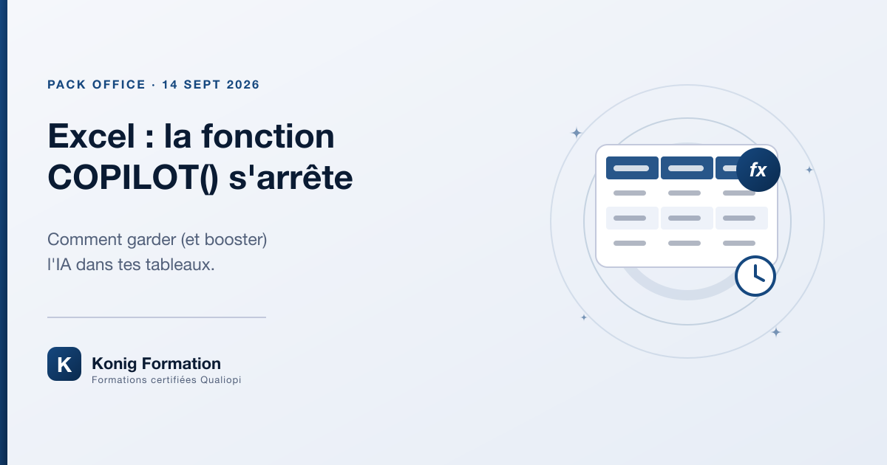
La fonction COPILOT() d’Excel s’arrête aujourd’hui : comment garder l’IA dans tes tableaux
La fonction COPILOT() d'Excel disparaît le 14/09/2026 : voici comment garder l'IA dans tes tableaux (volet Copilot + Python), pas à pas.

Se reconvertir dans le marketing digital en 3 étapes en 2026 (sans y laisser ton salaire)
Tu sens que ton poste tourne en rond, tu regardes le marketing digital de loin en te disant « c’est pour les autres » ? Faux. C’est l’un des r
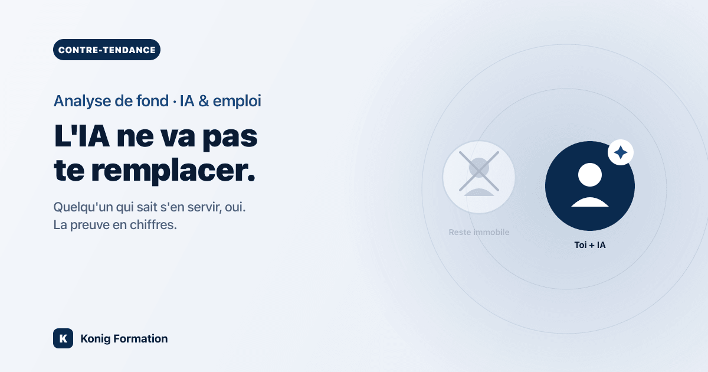
Non, l’IA ne va pas te remplacer. Voici qui va te remplacer — et la preuve en chiffres.
Tu l’as pensé, au moins une fois, en voyant ChatGPT ou Claude cracher en 10 secondes un texte que tu aurais mis une heure à écrire : « Dans deux ans, mon
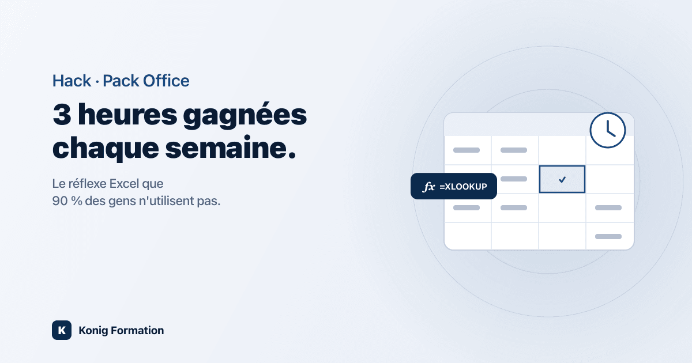
Microsoft supprime une fonction Excel le 14 septembre : le vrai réflexe à apprendre à la place
Tu passes encore des heures à copier-coller entre deux fichiers Excel, à chercher une info à la main, à refaire le même tableau chaque semaine ? Ce tuto va te f
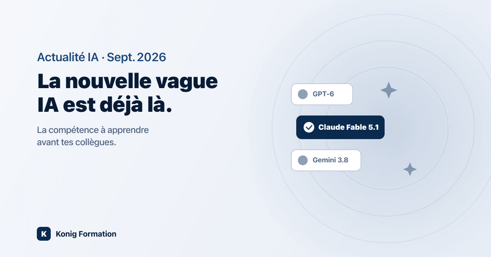
Claude Fable 5.1 vient de sortir : la vraie compétence à apprendre maintenant (avant tes collègues)
Tu as l’impression qu’un nouveau modèle d’IA sort toutes les deux semaines et que tu cours derrière sans jamais rattraper ? Tu n’es pas
Prêt à passer à la pratique ?
Besoin d’aide pour choisir votre formation ? Notre équipe vous accompagne dans le choix de la formation idéale et dans vos démarches de financement (CPF, OPCO, FAF, France Travail).